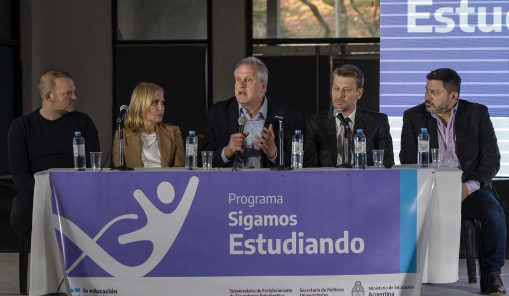

Perczyk participó de lanzamiento de programa de apoyo de universidades a
estudiantes secundarios
Con una inversión total de 375 Millones de pesos, se destinarán hasta 5
millones de pesos por proyecto para las universidades y hasta 2 millones para las facultades de
la UTN.

Jornada Extendida: “el lunes se suman 318 escuelas y completamos las 630 de la provincia”, dijo
Lichtmajer
El ministro de Educación, Juan Pablo Lichtmajer, dialogó en rueda de prensa
desde el Centro de Innovación CIIDEPT sobre la importancia de la muestra EducaTec, la
implementación de extensión de jornada en 318 establecimientos educativos que comenzará el
próximo lunes, como así también, temas concernientes a la actualidad educativa provincial.
“EducaTec es una muestra única que tiene la provincia de Tucumán y combina Ciencia, Arte,
Tecnología, Conocimiento, Innovación y temáticas vinculadas a nuestra Identidad. Empezó el 5 de
septiembre y se extiende hasta el 21 con entrada libre y gratuita para toda la familia”,
destacó.
Por otro lado, señaló que “tiene una característica en términos educativos que combina diversión
con conocimiento; están todas las ciencias presentes, las tradicionales y las nuevas disciplinas
que aprenden jugando con la realidad virtual, la panteología de dinosaurios, muestras de yungas
y mamíferos, programación robótica, conectividad, identidad en relación a mujeres tucumanas y
argentinas, héroes de Malvinas, muestras vinculadas a economía y producción que les permite a
las familias conseguir cosas a buenos precios. Es una muestra de orientación vocacional que
permite a los chicos conocer más; en Tucumán hay más de 200 carreras que se pueden elegir y
muchas veces eligen entre tres o cuatro, estas cosas permiten que el abanico de oportunidades
sea más grande y se lo hace de manera divertida”.
“La muestra crece año a año, en su última edición presencial tuvo 700 mil tucumanos que vinieron
y en 7 años son 2 millones de visitas. Hay atracciones nuevas, está la presencia del Ministerio
de Ciencia y Tecnología de la Nación con todo lo que es la muestra ‘Lugar a dudas’, que trae el
ministro Filmus a Tucumán por primera vez; la muestra Festivales Argentinos que trae el ministro
Tristán Bauer para llevar arte y cultura; y todo lo que es Libros para Aprender y Conectar
Igualdad que es una carpa enorme que trae el ministro Perczyk, tenemos una importante de ayuda
de la Nación con el jefe de Gabinete, Juan Manzur, también” agregó.